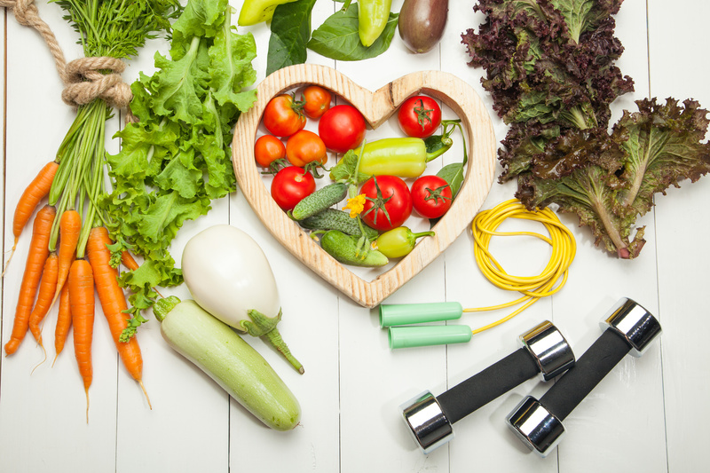

🫁 נשימה
נשימה נכונה משפרת את הבריאות הכללית על ידי הפחתת מתח, שיפור ריכוז ואנרגיה, ותמיכה באיזון פיזי ומנטלי.

נולדתי בשנות ה-70, וכשהייתי נער בשנות ה-90, אורח חיים בריא היה חלק בלתי נפרד מהשגרה שלי. בזמנו, כשהאינטרנט היה בחיתוליו, נאלצתי לדווש על אופניי לספרייה העירונית כדי לחפש ספרים ומידע בנושא.
עם השנים, החיים השתנו: הצבא, הלימודים, המשפחה והעבודה תפסו את קדמת הבמה, ואט-אט זנחתי את ההרגלים הבריאים. ואז, בשנת 2019, פרצה מגפת הקורונה. עברנו לעבוד מהבית, תוך כדי ניהול הילדים שנותרו בביתם גם הם. בכל יום, מצאתי את עצמי לוקח אותם לפארק הכושר השכונתי – אולי כדי להעסיק אותם, אבל גם כדי להחזיר לחיינו מעט סדר ותנועה. למרבה הפלא, המגפה קצת החזירה פורפורציה לחיים והבהירה מה באמת חשוב.
היום, אחרי שעברתי את גיל 45, אני מקפיד שוב על אורח חיים בריא ומרגיש טוב יותר מאי פעם.

בשונה מתחילת שנות ה-90, כיום האינטרנט מוצף בתוכן בנוגע לאורח חיים בריא – אך לא כל התוכן אמין או מבוסס. דווקא בנושאים שקשורים לבריאותנו, חשוב לסנן את המידע ולוודא שהוא מגיע ממקורות מהימנים.
שמי גלעד, אני נשוי לטליה ואב ליואב ויעל. יש לי תואר דוקטור במדעי המחשב מהטכניון, ואני מקפיד על אורח חיים בריא. מטרת הבלוג הזה היא להנגיש מידע אמין וברור המבוסס על מקורות מדעיים. כל פוסט יתבסס על סקירת מאמרים שפורסמו בכתבי עת מוכרים ושעברו ביקורת עמיתים. בנוסף, אשתף מהניסיון האישי שלי לאורך הדרך.
נשימה נכונה משפרת את הבריאות הכללית על ידי הפחתת מתח, שיפור ריכוז ואנרגיה, ותמיכה באיזון פיזי ומנטלי.
קפה הוא משקה פופולרי שמגביר עירנות ויכול לסייע במניעת מחלות כמו סוכרת ומחלות לב, אך צריכתו המופרזת עלולה לגרום לבעיות כמו קשיי שינה ותלות.
צום לסירוגין, כאשר מבוצע בצורה מאוזנת, עשוי לתרום לשיפור הבריאות על ידי שיפור חילוף החומרים, איזון רמות הסוכר, וסיוע במניעת מחלות כרוניות.
אמבטיות קרח יכולות לשפר את הבריאות על ידי הפחתת דלקת והקלה על כאבים, אך יש לבצע אותן בזהירות ובפיקוח רפואי.
דלקות ספורט הן פציעות הנגרמות מעומס יתר או חבלה, ומשפיעות על גידים, שרירים ומפרקים, כאשר מנוחה וטיפול מתאים נדרשים להחלמה והחזרה הדרגתית לפעילות.
עיסויים תורמים לשיפור הבריאות על ידי הקלה על מתח וכאבים, שיפור זרימת הדם ואיכות השינה, ומשלבים טוב עם פעילות גופנית ותזונה נכונה.
חלבונים חשובים לאורח חיים בריא בכך שהם תומכים בבניית שרירים, תיקון רקמות ושמירה על מערכת חיסון. צריכתם עוזרת לתחושת שובע ולניהול משקל, וחשוב לשלבם בתזונה מאוזנת יחד עם פעילות גופנית ושינה מספקת.
ישיבה ממושכת מזיקה לבריאות, ולכן חשוב לשלב תנועה ופעילות גופנית במהלך היום כדי לשמור על אורח חיים בריא.
שינה היא תהליך חיוני לשיקום הגוף והנפש, המשפר תפקוד קוגניטיבי ובריאות כללית, בעוד שמחסור בשינה עלול לגרום להשלכות בריאותיות חמורות.
צריכת סוכר מופרזת עלולה להזיק לבריאות, ולכן הפחתת סוכר בתזונה ושימוש במקורות טבעיים כמו פירות יכולה לשפר את הרווחה הכללית.
חשיפה מתונה ומוגנת לשמש תורמת לבריאות הגוף, אך יש להיזהר מחשיפה מוגזמת שעלולה להזיק לעור.
שתיית מים חיונית לבריאות הגוף, תומכת בתהליכים כמו וויסות טמפרטורה וסילוק רעלים, ומונעת התייבשות שיכולה לגרום לעייפות וכאבי ראש. מומלץ לשתות לפחות 8 כוסות ביום.